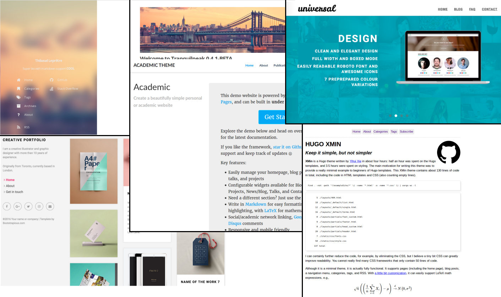
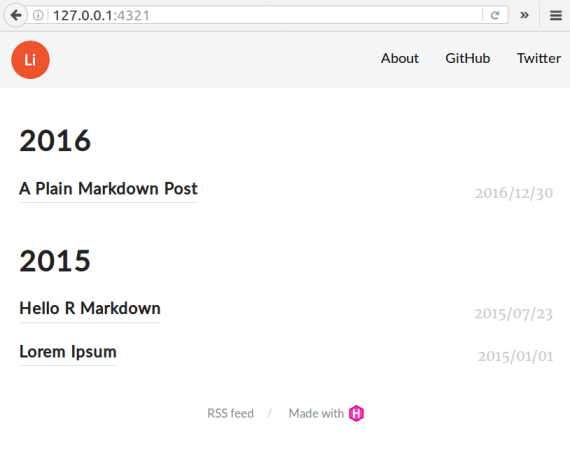
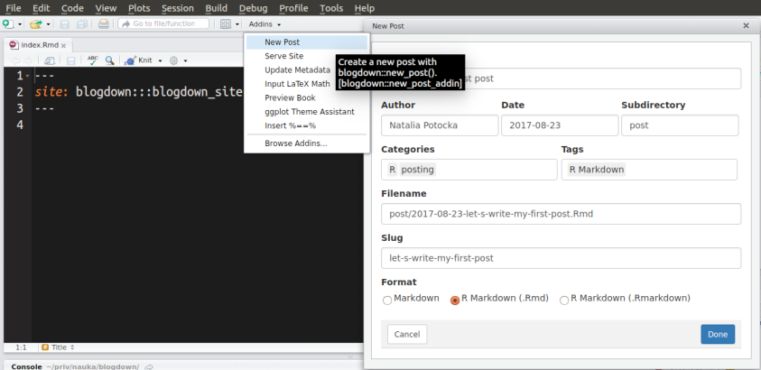
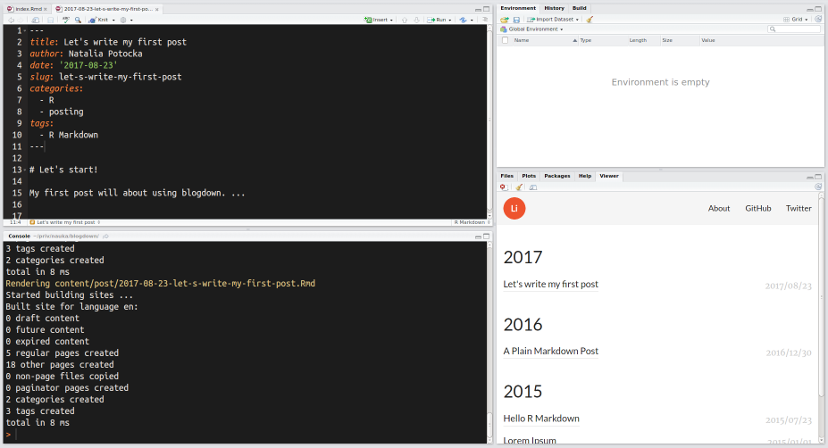

blogdown?
Hugo:
blogdownblogdown::install_hugo()blogdown::new_site() w argumencie podając motyw
options(servr.daemon = TRUE) a następnie blogdown::serve_site() lub wybranie tej opcji z Addinsblogdown::new_post() lub wybranie tej opcji z Addins
Po zapisaniu pliku *.Rmd wszystkie zmiany pojawiają się automatycznie:

Konfiguracja strony: config.toml.
Zawartość strony (z plikami .Rmd): folder content.
Strona gotowa do opublikowania: folder public.
├── archetypes
├── blogdown.Rproj
├── config.toml
├── content
│ ├── about.md
│ └── post
├── data
├── index.Rmd
├── layouts
├── public
│ ├── 2015
│ ├── 2016
│ ├── 2017
│ ├── about
│ ├── categories
│ ├── css
│ ├── fonts
│ ├── images
│ ├── index.html
│ ├── index.xml
│ ├── js
│ ├── post
│ ├── sitemap.xml
│ └── tags
├── static
│ └── post
└── themes
└── hugo-lithium-themePlik config.toml:
baseurl = "/"
languageCode = "en-us"
title = "A Hugo website"
theme = "hugo-lithium-theme"
[[menu.main]]
name = "About"
url = "/about/"
[[menu.main]]
name = "GitHub"
url = "https://github.com/rstudio/blogdown"
[[menu.main]]
name = "Twitter"
url = "https://twitter.com/rstudio"Wszystkie opcje dostępne są tutaj: https://gohugo.io/getting-started/configuration/
permalinks - sposób tworzenia linków: opcja slugpublishDir - folder, w którym generowana będzie stronatheme - motyw, na którym budujemy stronęignoreFiles - pliki i foldery do ignorowania przy budowie strony, np. pliki *.RmduglyURLs - równe false: foo.md generuje foo/index.html; równe true: foo.md generuje foo.htmlcontent├── _index.md
├── about.md
├── vitae.md
├── post/
│ ├── 2017-01-01-foo.md
│ ├── 2017-01-02-bar.md
│ └── ...
└── ...Każdy post zaczyna się od specyfikacji w YAMLu.
draft - widoczne tylko na lokalne stroniepublishdate - można określić datę publikacji (widoczne tylko na lokalnej stronie)weight - waga, którą można określić przy sortowaniu postówslug - końcówka URLa zdefiniowana raz, nawet jeśli zmieni się tytułnetlify.com, najlepiej w połączeniu z GITemgh-pagesblogdown::new_site(theme = 'user/repo')config.toml)options(servr.daemon = TRUE)Addins opcję Serve siteAddins opcję New postAddins opcję Update metadata, jeśli jest taka potrzebaDokumentacja blogdowna: https://bookdown.org/yihui/blogdown/